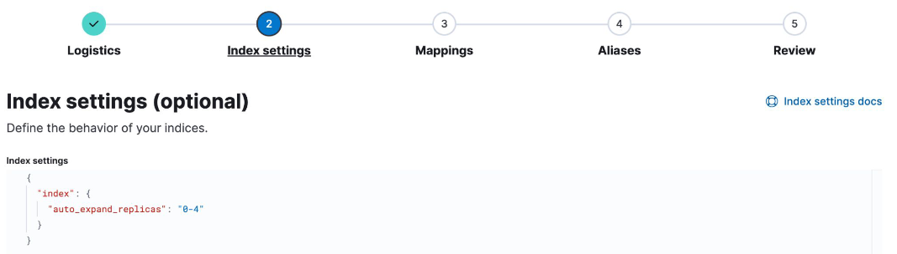
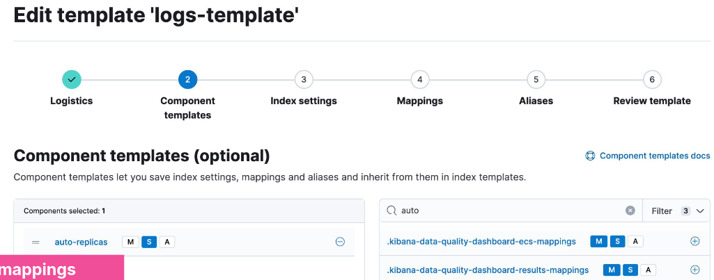
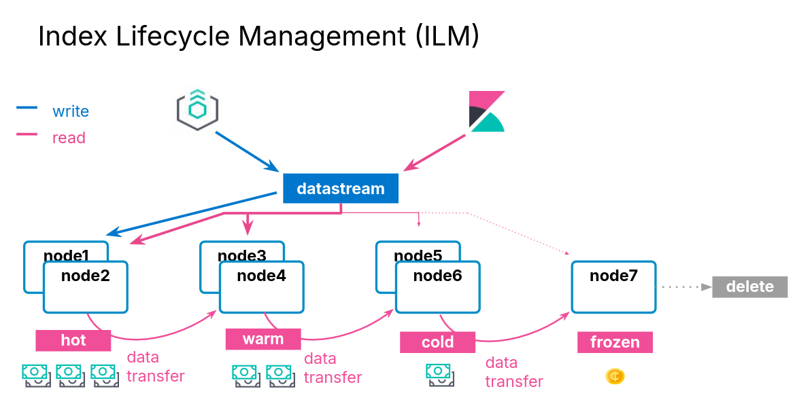

Data Management
Data Management Concepts
Managing Data
- Data management needs differ depending on the type of data you are collecting:
| Static | Time Series Data |
|---|---|
| Data grows slowly | Data grows fast |
| Updates may happen | Updates never happen |
| Old data is read frequently | Old data is read infrequently |
Index Aliases
Scaling Indices
- Indices scaly by adding more shards
- increasing the number of shards of an index is expensive
- Solution: create a new index
Using Aliases
- Use index aliases to simplify your access to the growing number of indices
An Alias to Multiple Indices
- Use the
_aliasesendpoint to create an alias- specify the
write indexusingis_write_index
- specify the
- Define an alias at index creation
POST _aliases
{
"actions": [ {
"add": {
"index": "my_logs-*",
"alias": "my_logs"
} },
{
"add": {
"index": "my_logs-2021-07",
"alias": "my_logs",
"is_write_index": true
} }] }
Index Templates
What are Index Templates?
- If you need to create multiple indices with the same settings and mappings, use an index template
- templates match an index pattern
- if a new index matches the pattern, then the template is applied
Elements of an Index Template
- An index template can contain the following sections:
- component templates
- settings
- mappings
- aliases
- Component templates are reusable building blocks that can contain:
- settings, mappings or aliases
- components are reused across multiple templates
Defining an Index Template
- This logs-template:
- overrides the default setting of 1 replica
- for any new indices with a name that begins with logs:
PUT _index_template/logs-template
{
"index_patterns": [ "logs*" ],
"template": {
"settings": {
"number_of_replicas": 2
}
}
}
Applying an Index Template
- Create an index that matches the index pattern of one of your index templates:
{
"logs1" : {
"settings" : {
"index" : {
...
"number_of_replicas" : 2,
...
}
}
}
}
Component Template Example
- A common setting across many indices may be to auto expand replica shards as more nodes become available
- put this setting into a component template:

- Use the component in an index template:

Resolving Template Match Conflicts
- One and only one template will be applied to a newly created index
- If more than one template defines a matching index pattern, the priority setting is used to determine which template applies
- the highest priority is applied, others are not used
- set a priority over 200 to override auto-created index templates
- use the
_simulatetool to test how an index would match
POST /_index_template/_simulate_index/logs2
Data Streams
Time Series Data Management
- Time series data typically grows quickly and is almost never updated
Data Streams
- A data stream lets you store time-series data across multiple indices, while giving you a single named resource for requests
- indexing and search requests are sent to the data stream
- the stream routes the request to the appropriate backing index
Backing Indices
- Every data stream is made up of hidden backing indices
- with a single write index
- A rollover creates a new backing index
- which becomes the stream's new write index
Choosing the right Data Stream
- Use the
index.modesetting to control how your time series data will be ingested- Optimize the storage of your documents
index.mode | Use case | _source | Storage saving |
|---|---|---|---|
| standard | for default settings | persisted | - |
| time_series | for storing metrics | synthetic | up to 70% |
| logsdb | for storing logs | synthetic | ~ 2.5 times |
Data Stream Naming Convention
- Data streams are named by:
- type: to describe the generic data type
- dataset: to describe the specific subset of data
- namespace: for user-specific details
- Each data stream should include
constant_keywordfields for:data_stream.typedata_stream.datasetdata_stream.namespace
constant_keywordhas the same value for all documents
Example Use of Data Streams
- Log data separated by app and env
- Each data stream can have separate lifecycles
- Different datasets can have different fields
GET logs-*-*/_search
{
"query": {
"bool": {
"filter": {
"term": {
"data_stream.namespace": "prod"
}
}
}
}
}
Creating a Data Stream
- Step 1: create component templates
- make sure you have a
@timestampfield
- make sure you have a
- Step 2: create a data stream-enabled index template
- Step 3: create the data stream by indexing documents
Step 1
PUT _component_template/my-mappings
{
"template": {
"mappings": {
"properties": {
"@timestamp": {
"type": "date",
"format": "date_optional_time||epoch_millis"
}
}
}
}
}
Step 2
PUT _index_template/my-index-template
{
"index_patterns": ["logs-myapp-default"],
"data_stream": { },
"composed_of": [ "my-mappings"],
"priority": 500
}
Step 3
- Use
POST <stream>/_docorPUT <stream>/_create/<doc_id>- if you use
_bulk, you must use thecreateaction
- if you use
Request:
POST logs-myapp-default/_doc
{
"@timestamp": "2099-05-06T16:21:15.000Z",
"message": "192.0.2.42 -[06/May/2099:16:21:15] \"GET /images/bg.jp..."
}
Response:
{
"_index": ".ds-logs-myapp-default-2024.10.22-000001",
"_id": "XZPRtZIBS7arFsx0_FAp",
...
}
Rollover a Data Stream
- The rollover API creates a new index for a data stream
- Every new document will be indexed into the new index
- You cannot add new documents to other backing indices
Request:
POST logs-myapp-default/_rollover
Response:
{
...
"old_index": ".ds-logs-myapp-default-2024.10.22-000001",
"new_index": ".ds-logs-myapp-default-2024.10.22-000002",
...
}
Changing a Data Stream
- Changes should be made to the index template associated with the stream
- new backing indices will get the changes when they are created
- older backing indices can have limited changes applied
- Changes to static mappings still require a reindex
- Before reindexing, use the resolve API to check for conflicting names:
GET /_resolve/index/logs-myapp-new*
Reindexing a Data Stream
- Set up a new data stream template
- use the data stream API to create an empty data stream:
PUT /_data_stream/logs-myapp-new
- Reindex with
op_typeofcreate:- can also use single backing indices to preserve order
POST /_reindex
{
"source": {
"index": "logs-myapp-default"
},
"dest": {
"index": "logs-myapp-new",
"op_type": "create"
}
}
Index Lifecycle Management
Data Tiers
What is a data tier?
- A data tier is a collection of nodes with the same data role
- that typically share the same hardware profile
- There are five types of data tiers:
- content
- hot
- warm
- cold
- frozen
Overview of the Five Data Tiers
- The content tier is useful for static datasets
- Implementing a hot -> warm -> cold -> frozen architecture can be achieved using the following data tiers:
- hot tier: have the fastes storage for writing data and for frequent searching
- warm tier: for read-only data that is searched less often
- cold tier: for data that is searched sparingly
- frozen tier: for data that is accesses rarely and never updated
Data Tiers, Nodes, and Indices
- Every node is all data tiers by default
- change using the
node.rolesparameter - node roles are handled for you automatically on Elastic Cloud
- change using the
- Move indices to colder tiers as the data gets older
- define an index lifecycle management policy to manage this
Configuring an Index to Prefer a Data Tier
- Set the data tier preference of an index using the
routing.allocation.include._tier_preferencepropertydata_contentis the default for all indicesdata_hotis the default for all data streams- you can update the property at any time
- ILM can manage this setting for you
PUT logs-2021-03
{
"settings": {
"index.routing.allocation.include._tier_preference" : "data_hot"
}
}
Index Lifecycle Management

ILM Actions
- ILM consists of policies that trigger actions, such as:
| Action | Description |
|---|---|
| rollover | create a new index based on age, size, or doc count |
| shrink | reduce the number of primary shards |
| force merge | optimize storage space |
| searchable snapshot | saves memory on rarely used indices |
| delete | permanently remove an index |
ILM Policy Example
- During the hot phase you might:
- create a new index every two weeks
- In the warm phase you might:
- make the index read-only and move to warm for one week
- In the cold phase you might:
- convert to a fully-mounted index, decrease the number of replicas, and move to cold for three weeks
- In the delete phase:
- the only action allowed is to delete the 28-days-old index
Define the Hot Phase
- You want indices in the hot phase for two weeks:
PUT _ilm/policy/my-hwcd-policy
{
"policy": {
"phases": {
"hot": {
"actions": {
"rollover": {
"max_age": "14d"
}
}
},
Define the Warm Phase
- You want the old index to move to the warm tier immediately and set the index as read-only:
- data age is calculated from the time of rollover
"warm": {
"min_age": "0d",
"actions": {
"readonly": {}
}
},
Define the Cold Phase
- After one week of warm, move the index to the cold phase, and convert the index:
"cold": {
"min_age": "7d",
"actions": {
"searchable_snapshot" : {
"snapshot_repository" : "my_snapshot"
}
}
} },
Define the Delete Phase
- Delete the data four weeks after rollover:
- which means the documents lived for 14 days in hot
- then 7 days in warm
- then 21 days in cold
"delete": {
"min_age": "28d",
"actions": {
"delete": {}
}
}
Applying the Policy
- Create a component template
- Link you ILM policy using the setting:
index.lifecycle.name
PUT _component_template/my-ilm-settings
{
"template": {
"settings": {
"index.lifecycle.name": "my-hwcd-policy"
}
}
}
Create an Index Template
- Use other components relevant to your stream
PUT _index_template/my-ilm-index-template
{
"index_patterns": ["my-data-stream"],
"data_stream": { },
"composed_of": [ "my-mappings", "my-ilm-settings"],
"priority": 500
}
Start Indexing Documents
- ILM takes over from here
- When a rollover happens, the number of indices is incremented
- the new index is set as the write index of the data stream
- old indices will automatically move to other tiers
Troubleshooting Lifecycle Rollovers
- If an index is not healthy, it will not move to the next phase
- The default poll interval for a cluster is 10 minutes
- can change with
indices.lifecycle.poll_interval
- can change with
- Check the server log for errors
- Make sure you have the appropriate data tiers for migration
- Reminder: use a template to apply a policy to new indices
- Get detailed information about ILM status with:
GET <data-stream>/_ilm/explain
Agent and ILM
- Agent uses ILM policies to manage rollover
- By default, Agent policies:
- remain in the host phase forever
- never delete
- indices are rolled over after 30 days or 50GB
- The default Agent policies can be edited with Kibana
Searchable Snapshots
Cost Effective Storage
- As your data streams and time series data grow, your storage and memory needs increase
- at the same time, the utility of that older data decreases
- You could delete this older data
- but if it remains valuable, it is preferable to keep it available
- There is an action available called searchable snapshot
Snapshots
Disaster Recovery
- You already know about replica shards:
- they provide redundant copies of your documents
- that is not the same as a backup
- Replicas do not protect you against catastrophic failure
- you will need to keep a complete backup of your data
Snapshot and Restore
- Snapshot and restore allows you to create and manage backups taken from a running ES cluster
- takes the current state and data in your cluster and saves it to a repository
- Repos can be on a local shared filed system or in the cloud
- the ES Service performs snapshots automatically
Types of Repos
- The backup process starts with the creation of a repository
- different types are supported
| Shared file system | define path.repo in every node |
| Read-only URL | used when multiple clusters share a repo |
| AWS S3 | for AWS S3 repos |
| Azure | for Microsoft Azure Blob storage |
| GCS | for Google Cloud Storage |
| repository-hdfs plugin | store snapshots in Hadoop |
| Source-only repo | take minimal snapshots |
Setting Up a Repo
- Cloud deployments come with free repos preconfigured
- Use Kibana to register a repo
Taking a Snapshot Manually
- Once the repo is configured, you can take a snapshot
- using the
_snapshotendpoint or the UI - snapshots are a "point-in-time" copy of the data and incremental
- using the
- Can back up only certain indices
- Can include cluster state
PUT _snapshot/my_repo/my_logs_snapshot_1
{
"indices": "logs-*",
"ignore_unavailable": true
}
Automating Snapshots
- The
_snapshotendpoint can be called manually- every time you want to take a snapshot
- at regular invervals using an external tool
- Or, you can automate snapshots with Snapshot Lifecycle Management (SLM) policies
- policies can be created in Kibana
- or using the
_slmAPI
Restoring from a Snapshot
- Use the
_restoreendpoint on the snapshot ID to restore all indices from that snapshot:
POST _snapshot/my_repo/my_logs_snapshot_1/_restore
- Can also restore using Kibana
Searchable Snapshots
- There is an action called searchable snapshots
- Benefits include:
- search old data in a very cost-effective fashion
- reduce storage costs
- use the same mechanism you are aleady using
How Searchable Snapshots Work
- Searching a searchable snapshot index is the same as searching any other index
- when a snapshot of an index is searched, the index must get mounted locally in a temporary index
- the shards of the index are allocated to data nodes in the cluster
Setting up Searchable Snapshots
- In the cold or frozen phase, you configure a searchable snapshot by selecting a registered repository
Add Searchable Snapshots to ILM
- Edit your ILM policy to add a searchable snapshot to your cold or frozen phase
- ILM will automatically handle the index mounting
- the hot and cold phase uses fully mounted indices
- the frozen phase uses partially mounted indices
- If the delete phase is active, it will delete the searchable snapshot by default:
- turn off with
"delete_searchable_snapshot": false
- turn off with
- If your policy applies to a data stream, the searchable snapshot will be included in searches by default